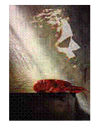
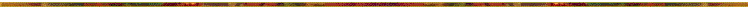

THE ART OF DREAMING (CD
1997)
|
1. The Dreaming 14:41 2. Somnambul 11:40 3. Sedated 9:33 4. Illuminescent 12:45 5. Sub Conscious 8:18 6. Awakening 8:56
|
The Art of Dreaming, 1997 CD
CI003 Jeder
Mensch träumt jede Nacht, verbringt einen großen Teil seines Lebens im
Schlaf- bzw. Traum und doch wissen wir recht wenig über diesen
außerordentlichen Bewußtseinszustand. Neuere Ergebnisse der Schlaf- und
Traumforschung zeigen, daß die klassische Traumtheorie von Sigmund
Freud nur einen Teilaspekt darstellt und in vielen Punkten überdacht werden
muß. Neben der Verarbeitung von Alltagserlebnissen, Wünschen oder unterbewußt
vorhandenen Ängsten und Problemen gibt es noch viele Trauminhalte und
-Qualitäten, deren Sinn und Ursprung unbekannt ist. In der griechischen
Antike spielte der Traum eine Rolle als Orakel, Zukunftsvision. Bei vielen
ethnischen Kulturen spielen Träume eine gewichtige soziologische und
metaphysische Rolle - etwa bei den Senoi, Aboriginees, Huichol, Tolteken,
Ägyptern - um nur ein paar zu nennen. In der westlichen, okkulten Tradition
hatten Träume - insbesondere Klarträume - eine esoterische Bedeutung als
Ausgangspunkt für Astralreisen. Gemeinsam ist, daß der Traum als Tor zu
anderen Welten betrachtet wird - Welten, die im Schlaf erschaffen werden,
oder vielleicht unabhängig vom Träumenden existieren? Wir alle kennen die
Flut von sich abwechselnden Bildern, Landschaften und emotionalen Zuständen,
die im Traum vorherrscht. Getreu dem Namen CHANGING IMAGES haben wir diese
musikalisch interpretiert... Martin (1997)  Traumphilosophie Wir sind nur gekommen, Träumen
kann nur erfahren werden. Denn Träumen heißt nicht einfach, Träume zu haben;
es hat auch nichts mit Tagträumen oder Wunschvorstellungen zu tun. Durch das
Träumen können wir andere Welten wahrnehmen, die wir gewiß auch beschreiben
können, aber wir können nicht beschreiben, was uns befähigt, sie
wahrzunehmen. Und doch merken wir, daß das Träumen uns jene anderen Sphären
erschließt. Träumen scheint eine Empfindung zu sein; ein Vorgang im Körper,
ein geistiges Bewußtwerden. Zwischen
es träumte mir und ich träumte liegen die Weltalter. Aber was ist wahrer?
Sowenig die Geister den Traum senden, so wenig ist es das Ich, das träumt. In dem
Augenblick, in dem die Traumwache beginnt, öffnet sich eine Welt
verführerischer und unerforschter Möglichkeiten. Eine Welt, in der die
ultimative Verwegenheit zur Realität wird und in der man das unerwartete
erwarten kann. Dann beginnt das eigentliche Abenteuer der Menschheit. Die
Welt wird offen für alle Möglichkeiten und Wunder. Der Traum
belehrt uns auf merkwürdige Weise von der Leichtigkeit unserer Seele in jedes
Objekt einzudringen - sich in jedes sogleich zu verwandeln. Einige
Wissenschaftler sind der Meinung, was den Menschen gegenüber anderen
Seinsformen auszeichne, sei die Kultur - im Gegensatz zur Natur. Auf Nahrung
bezogen heißt das dann zum Beispiel: das Gekochte sei höherwertig als das
Rohe. Kunst, also die bewußte Darstellung/Wiedergabe Wahrgenommenens oder
Vorstellbarens, gilt demnach sicher als Kultur. Das Träumen liegt dagegen in
der Natur des Menschen. Das bewußte Träumen, das Beherrschen der Träumens
überführt die Natur in Kultur und damit zur Kunst des Träumens. Die
Techniker verkabeln Deinen Körper und vernetzen Dein Gehirn und analysieren
die biochemischallkritischen Signale Deiner Schlaf- und Traumzeiten und
können minutiös berichten, wann Du wie heftig geträumt hast - während Du in
Deinem 3-Sekundentraum eine Welt hast enstehen und zerfallen lassen.  Equipment Martin: Volker: Recording: |